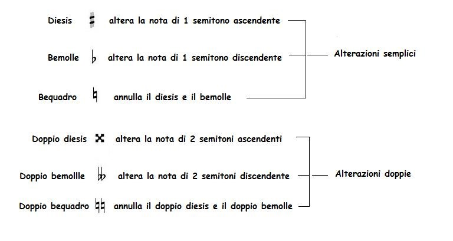

Alterazioni
Cosa sono le alterazioni
Le alterazioni sono segni grafici che posti davanti a una nota servono a modificare verso l’alto o verso il basso l’intonazione della nota stessa.
Le alterazioni si suddividono in alterazioni semplici> e in alterazioni doppie.
In un suono doppiamente alterato al quale si voglia annullare una delle alterazioni, è consuetudine usare insieme il bequadro e il bemolle o il bequadro e il diesis.
Le alterazioni possono essere costanti (o permanenti), momentanee (o transitorie) e di precauzione (o di rammento).
Sono costanti quando sono poste all’inizio del pezzo subito dopo la chiave e prima dell’indicazione del tempo, e hanno valore, per i suoni corrispondenti, durante tutto il brano musicale.
Per annullare un’alterazione costante, ci si serve del bequadro, il quale annulla l’alterazione per la sola battuta in cui è posto; nella battuta seguente l’alterazione riacquista la sua funzione. Per le alterazioni costanti è possibile solo l’uso dei diesis e dei bemolli.
Sono momentanee quando si trovano saltuariamente nel corso della composizione e in questo caso alterano il suono nella misura o battuta dove sono poste.
Si chiamano alterazioni di precauzione quando servono a rammentare all’esecutore che la nota, o le note, alterate momentaneamente nella misura o battuta precedente, devono ritornare allo stato naturale.